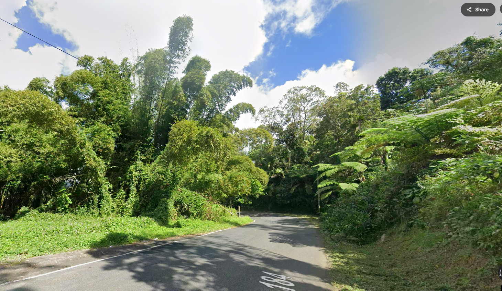
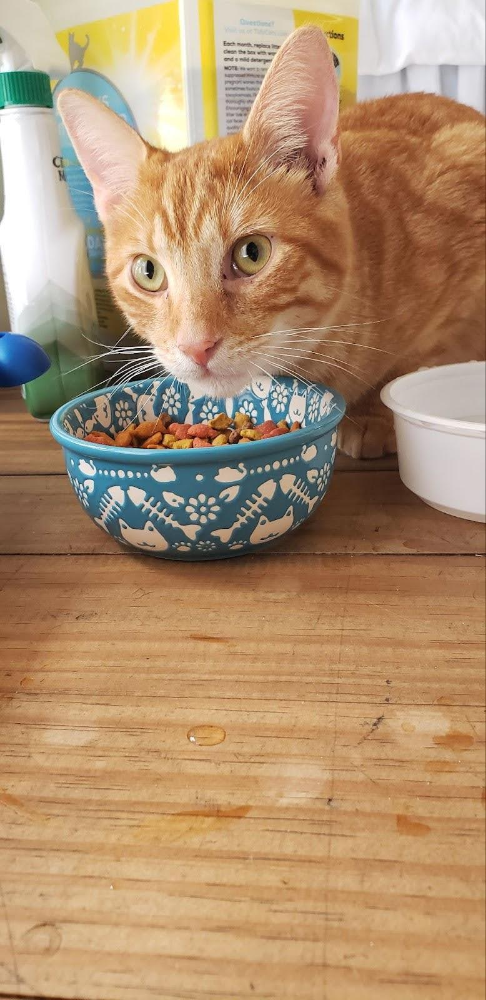
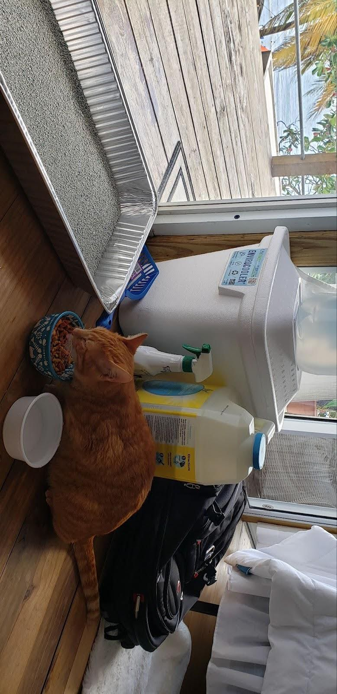
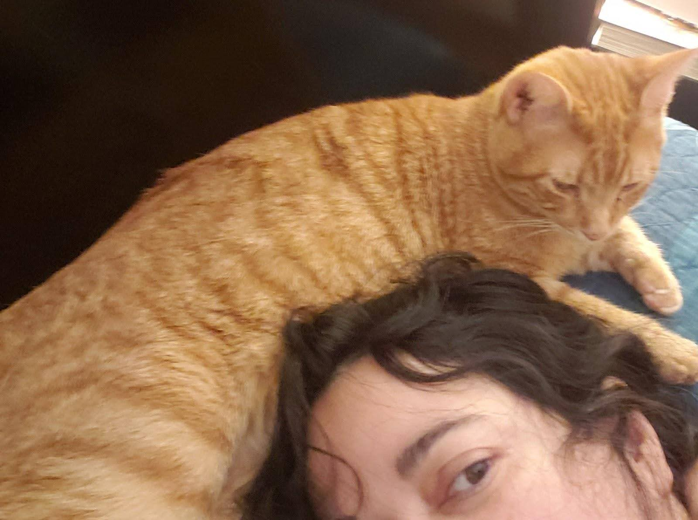

Early one day in February, after taking a red eye flight and driving one hour and a half, I decided to take the scenic route instead of the highway to go visit my parents. I drove for a while and stopped to take a picture of a tree fern on the side of the road at the state forest. A tree fern like any other tree fern which I’ve seen hundreds of times, in that same road, going to my hometown. What happened next was not something that happened hundreds of times.
That sound. I turned, listening. Heard it again. Now I'm totally intrigued, to the point of crossing the road to listen closer to what sounded like a cat's meow. I've never had a cat, but do recognize that sound.
I'm not seeing anything but more of the ferns that I'd stopped to photograph, and more tall grass at the edge of the forest.
"Kitty Kitty , come out of the forest. If you come out, I"ll take you with me" .
Did I really just say that? The grass began to quiver and the low ferns parted; it revealed an orange cat. Fearless. Determined. He walked directly towards me, stared directly into my eyes and "Meow".
I kept my promise. This orange kitty willingly came in my car and together we continued on through the forest, down the mountain, stopping at the nearest grocery store to get cat food.
It was heartbreaking, yet heartbuilding, to watch him devour the food, then look at me scared like something was going to happen to him.
My arrival was on a weekend, but I was able to call around to find a vet and get him the medical attention he needed. Other than being a little bit thin from living on his own for who knows how long, he was in remarkably good health. The vet thought he was about 8 months old. What made me decide to take this on? I don't recall actually thinking about it, I just did it. I had the vet do his exams, vaccines and anything else he needed, and thus, I became his guardian. Or maybe he was the one that adopted me.
For 10 days we traveled around during this trip. I set a litter box in a corner of the hotel rooms. Dishes and food set out.
We went to beaches. We went to cities. We went everywhere together. At night he slept on top of my head as if he needed comfort.
I didn’t know anything about cats then. I never had a pet before, but we have learned to communicate with each other. I downloaded an e-book about cats and cat behavior, I was now the one devouring information. The rest has been a remarkable life changing experience. My home changed. There's a dedicated "cat room". There are cat trees in other rooms. Baskets of toys, and toys to trip over. Two catios have been added on to the house, with a long winding enclosed tunnel connecting them, allowing safe outdoor exploration. And somewhere along the way, Leo, for that's how I came to know him, acquired a rescued family that he has become the leader and teacher of. We still go for car rides daily, he will meow until I tap my shoulder for him to jump up as we've practiced, then into the car- usually a coffee run drive through, where he sits on the dashboard in his kingly manner to greet staff as I humbly wait for my order. If I don't bring him, I'm greeted with a barrage of questions, staff worrying, "where's Leo??".
One and a half years later I formed a non-profit company to help other stray cats like Leo find the love and life they deserve. Today, Leo probably doesn't remember much of those days, but I think he does.
He still meows a lot. He is willful, determined, and fearless. And so very affectionate. We still go on car rides very often. Leo is a perfect, happy "forest" cat who loves posing, making new friends, and his mind known.
He's a cat that unknowingly changed the lives of dozens of other stray cats because of his encounter with me that day at the forest’s edge.
This was my very first cat I rescued. And the start of a love story that has changed me and others forever.